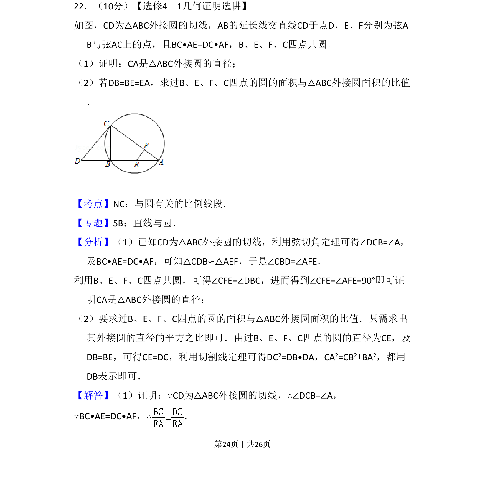
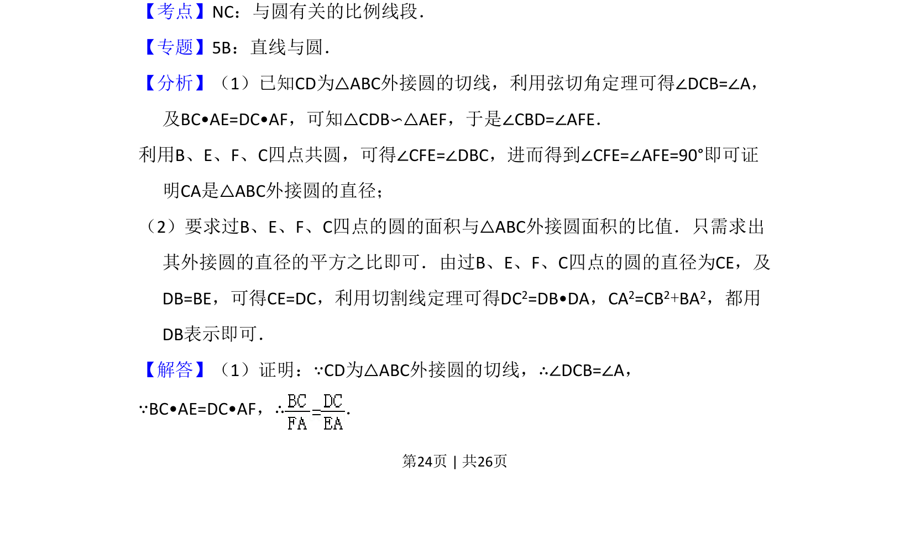
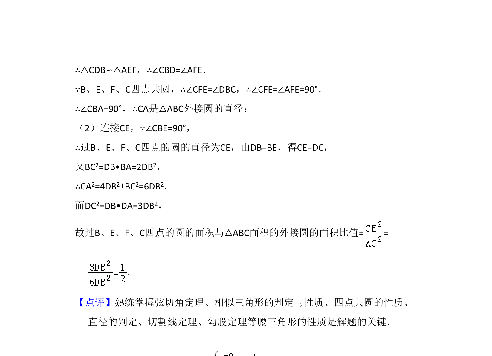

考点：弦切角定理 相似三角形 四点共圆 切割线定理

该题考查圆的切线性质、相似三角形判定及四点共圆，需证明直径并求两圆面积比。


📄 原 PDF 第 24 页：
素材/真题/吉林/2008-2024·（吉林）数学高考真题/2013年高考数学试卷（理）（新课标Ⅱ）（解析卷）.pdf
22．（10分）【选修4﹣1几何证明选讲】 如图，CD为△ABC外接圆的切线，AB的延长线交直线CD于点D，E、F分别为弦A B与弦AC上的点，且BC•AE=DC•AF，B、E、F、C四点共圆． （1）证明：CA是△ABC外接圆的直径； （2）若DB=BE=EA，求过B、E、F、C四点的圆的面积与△ABC外接圆面积的比值 ．
【考点】NC：与圆有关的比例线段．菁优网版权所有 【专题】5B：直线与圆． 【分析】（1）已知CD为△ABC外接圆的切线，利用弦切角定理可得∠DCB=∠A， 及BC•AE=DC•AF，可知△CDB∽△AEF，于是∠CBD=∠AFE． 利用B、E、F、C四点共圆，可得∠CFE=∠DBC，进而得到∠CFE=∠AFE=90°即可证 明CA是△ABC外接圆的直径； （2）要求过B、E、F、C四点的圆的面积与△ABC外接圆面积的比值．只需求出 其外接圆的直径的平方之比即可．由过B、E、F、C四点的圆的直径为CE，及 DB=BE，可得CE=DC，利用切割线定理可得DC2=DB•DA，CA2=CB2+BA2，都用 DB表示即可． 【解答】（1）证明：∵CD为△ABC外接圆的切线，∴∠DCB=∠A， ∵BC•AE=DC•AF，∴．